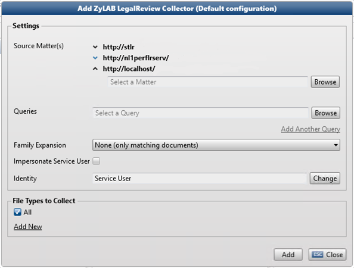

The ZyLAB LegalReview Collector collects files from one Legal Review matter to another. Using the settings specified in the Collector, documents, their views and fields will be collected and placed in the Destination Matter that corresponds with the Source Matter.
The Collector can be run multiple times (scheduled runs). Documents that are already collected, will not be collected a second time.
If you want to collect source documents without additional processing, turn off all processing rules and only keep indexing. You can do this on the Processing tab.
The following information will always be added to documents collected with the ZyLAB LegalReview Collector:
- URL of the system it was collected from
- Matter name and matter ID it was collected from
- Exact query that was used to collect the document
Important Notice
By default, the Legal Review Collector, does not import Redaction Fields from the Source Matter to the Destination Matter. Document views are a user setting that can differ from Matter to Matter and so redactions can end up covering different areas of an image. To avoid the risks of exposing confidential image contents ZyLAB recommends either (1) importing the Matter without redactions and re-applying those redactions if needed or (2) importing the redactions but ensuring that the image settings are the same in both Matters and then performing a full Quality Control of the redactions in the Destination Matter.

|
|
|